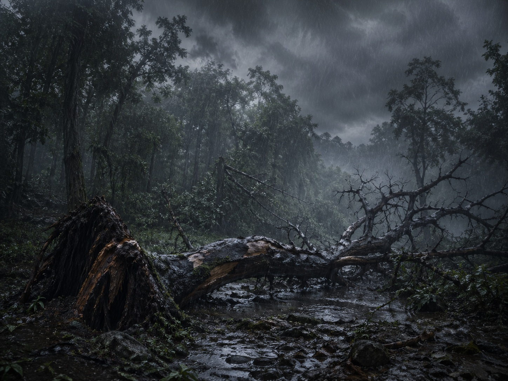
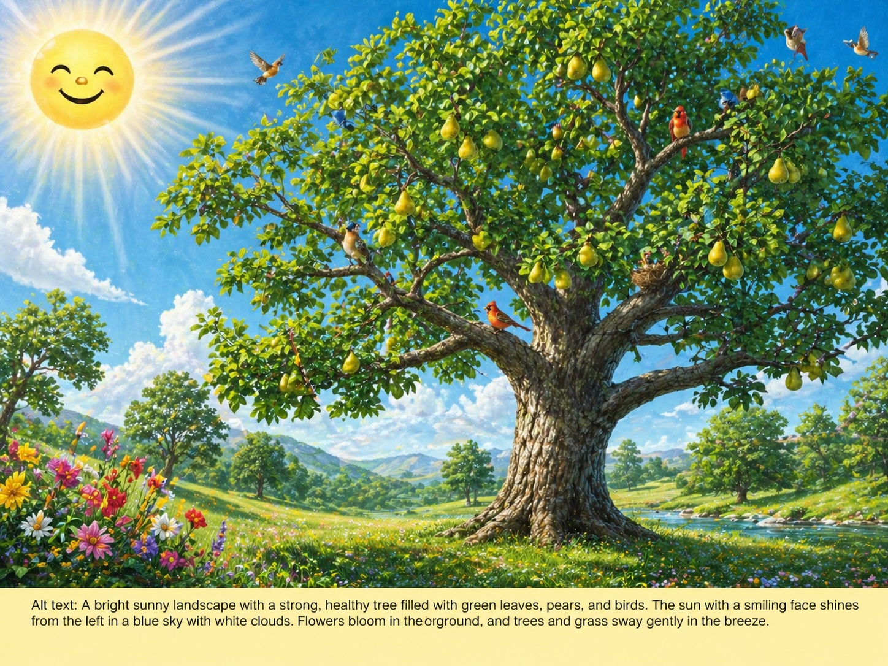
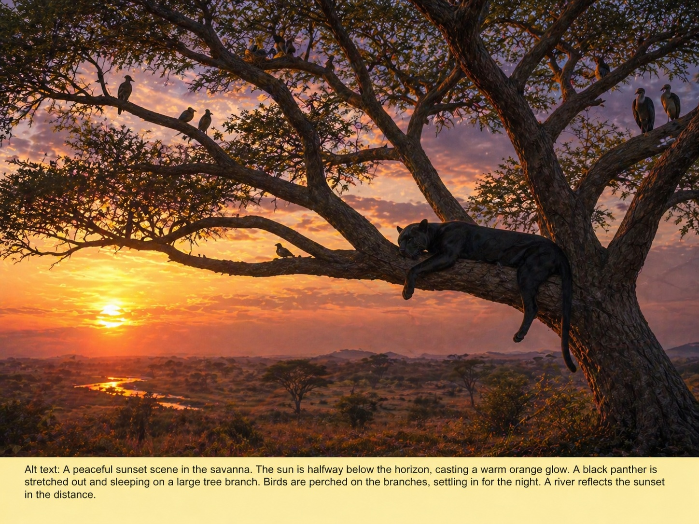
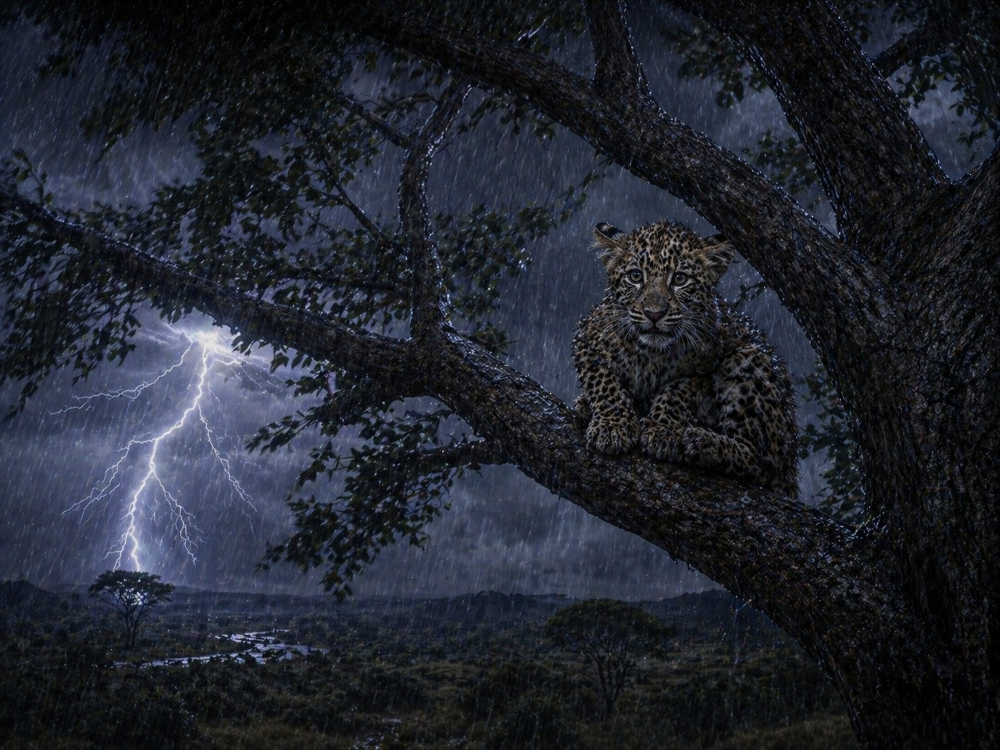
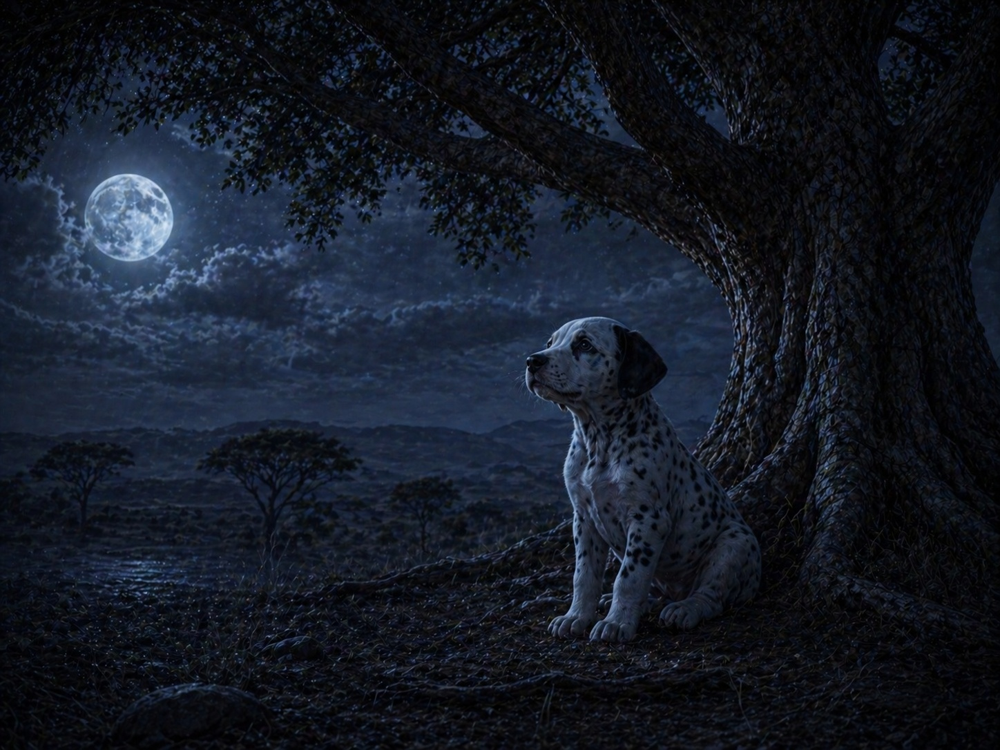
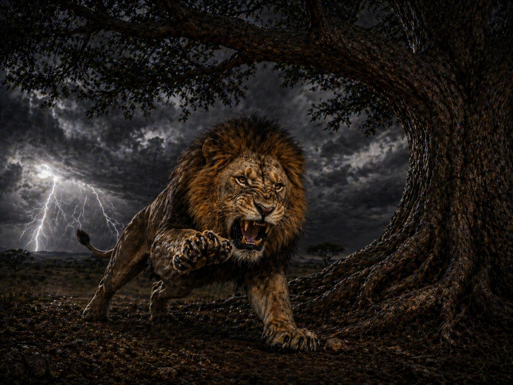

Sadness

Alt text: A rotten tree has fallen in a dark forest during a heavy monsoon. Rain pours over muddy ground, broken branches, and shadowy trees, creating a feeling of loss and sadness.
Citation: Sadness. Generated by ChatGPT Image Generator, OpenAI, on April 29, 2026. Prompt: "A dark stormy forest during a heavy monsoon, a large rotten tree collapsing into muddy water, dramatic rain, gray skies, broken branches, emotional atmosphere, cinematic lighting, highly detailed landscape, realistic style, horizontal orientation."
Happiness

Alt text: A strong pear tree stands in a bright meadow under a blue sky. Birds perch in the branches, pears hang from the tree, flowers bloom nearby, and a smiling sun shines from the left.
Citation: Happiness. Generated by ChatGPT Image Generator, OpenAI, on April 29, 2026. Prompt: "A bright sunny meadow with a strong healthy pear tree full of birds and ripe pears, flowers blooming beside the tree, trees swaying gently in the breeze, blue skies, smiling sun shining from the left side, joyful atmosphere, vibrant colors, highly detailed landscape, realistic fantasy style, horizontal orientation."
Calm

Alt text: A black panther sleeps stretched across a large tree branch at sunset while birds settle into the tree for the night. Warm light covers the peaceful savanna landscape.
Citation: Calm. Generated by ChatGPT Image Generator, OpenAI, on April 29, 2026. Prompt: "A peaceful sunset savanna landscape with a black panther sleeping across a large tree branch, birds roosting quietly in the tree, warm orange sunset halfway below the horizon, soft lighting, calm atmosphere, detailed wildlife environment, realistic cinematic style, horizontal orientation."
Fear

Alt text: A baby leopard sits in a swaying tree during a storm. Heavy rain falls, lightning strikes nearby, and the frightened cub looks tense and afraid.
Citation: Fear. Generated by ChatGPT Image Generator, OpenAI, on April 29, 2026. Prompt: "A frightened baby leopard sitting in a swaying tree during a thunderstorm, heavy rain, lightning striking nearby, dark storm clouds, wet fur, fearful expression, dramatic atmosphere, highly detailed cinematic landscape, realistic style, horizontal orientation."
Loneliness

Alt text: A Dalmatian puppy with black ears and spotted white fur sits alone under a large tree at night. A full moon lights the empty landscape, giving the scene a quiet feeling of longing.
Citation: Loneliness. Generated by ChatGPT Image Generator, OpenAI, on April 29, 2026. Prompt: "A lonely Dalmatian puppy with black ears and spotted white fur sitting beneath a large tree at night, full moon shining overhead, dark quiet landscape, blue moonlight, emotional atmosphere, distant empty horizon, highly detailed realistic landscape, horizontal orientation."
Anger

Alt text: A lion crouches beside a massive tree in a storm, claws extended and jaws open in a growl. Lightning and dark clouds make the scene feel intense and angry.
Citation: Anger. Generated by ChatGPT Image Generator, OpenAI, on April 29, 2026. Prompt: "A powerful lion in a pouncing position beside a massive tree during a violent storm, claws extended, jaws open in a growl, dark clouds, lightning in the background, aggressive posture, dramatic cinematic lighting, highly detailed realistic wildlife landscape, horizontal orientation."